의공산업기사 (2008-09-07 기출문제)
1과목: 기초의학 및 의공학
1. 다음( ) 안에 들어갈 알맞은 전극은?
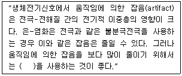
- 금속플레이드 전극(Metal-plate electrode)
- 플로팅 전극(Floating electrode)
- 접시 전극(Metal-disk electrode)
- 흡판 전극(Suction electrode)
(정답률: 83%)

2. 다음 중 피부가 인지하는 자극이 아닌 것은?
- 차가움
- 뜨거움
- 눌림
- 단 맛이 남
(정답률: 99%)
3. 다음 중 신장의 기능이라고 볼 수 없는 것은?
- 혈압조절
- 산 염기 평형유지
- 망원질 합성 및 분해
- 체액 및 전해질 조절
(정답률: 89%)
4. 전해질의 이온전류와 금속의 자유전자 전류 사이의 변환에 사용되는 것은?
- 전극(electrode)
- 인덕터(inductor)
- 바이메탈(bimetal)
- 포토트랜지스터(photo-transistor)
(정답률: 83%)
5. 세포 내 구조인 미토콘드리아(mitochondria)의 역할은?
- 영양소로부터 에너지를 추출
- 독성 물질을 해독하는 등의 세포 보호기능
- 여러 세포소기관들과의 상호작용을 통하여 단백질을 합성하는 역할
- 소화효소를 함유하여 노화된 세포소기관이나 부스러기 같은 물질들을 분해
(정답률: 86%)
6. 다음 중 교감 신경과 관련되지 않은 것은?
- 소화액 분비를 증가시킨다.
- 스트레스가 많아지면 활발해진다.
- 중추는 척수의 흉요부측각에 있다.
- 분비선을 관류하는 혈관들의 수축을 일으킨다.
(정답률: 87%)
7. 화학센서의 측정 대상 물질이 아닌 것은?
- 혈중 콜레스트롤 수치
- 산소 분압
- 혈압
- 혈당
(정답률: 63%)
8. 다음 중 용량성 센서에 대한 설명으로 옳은 것은?
- 변위를 주로 측정한다.
- 접합 반도체의 특성을 이용한다.
- 물리적 압력이 가해지면 전압을 발생한다.
- 온도에 따라 저항이 변화하는 특성을 이용한다.
(정답률: 75%)
9. 다음 그림과 같은 표면전극을 무엇이라고 하는가?
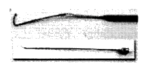
- 미세와이어 전극(Fing-wire electrode)
- 금속판 전극(Metal-plate electrode)
- 플로팅 전극(Floating electrode)
- 흡판 전극(Suction electorde)
(정답률: 92%)
10. 다음 ECG의 측정방법 중 팔다리에서 측정하는 신호가 아닌 것은?
- LEAD I
- V6
- aVF
- aVR
(정답률: 92%)
11. 다음 중 심전도 파형의 의미로 옳지 않은 것은?
- P 파는 심방의 탈분극
- Q 파는 심실 격벽의 탈분극
- R 파는 심실의 탈분극
- T 파는 심방의 재분극
(정답률: 86%)
12. 두 개의 코일을 같은 축 방향으로 배열하여 상호인덕턴스의 변화로부터 위치 변화를 측정하는 센서의 종류는?
- 압전센서
- 유도성센서
- 서미스터
- 열전쌍
(정답률: 85%)
13. 다음 중 피부 표면에 부착하는 전극은?
- 일회용 금속판 전극(disposable electorde)
- 이식형 전극(implantable electorde)
- 바늘형 전극(needle electorde)
- 미세 전극(micro electorde)
(정답률: 93%)
14. 의용생체 센서가 갖추어야 할 조건 중 입력의 변화에 대한 출력의 변화가 일정한 비례 관계를 가져야 함을 뜻하는 특성은?
- 높은 강도
- 안정성
- 선형성
- 생체적합성
(정답률: 94%)
15. 다음 그림에 나타낸 전극에서 피부와 접촉하는 부분은?
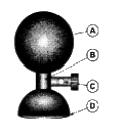
- Ⓐ 부분
- Ⓑ 부분
- Ⓒ 부분
- Ⓓ 부분
(정답률: 98%)
16. 용량성 센서의 평행판 축전기의 정전용량
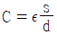
에서 ε 은 무엇을 의미하는가?- 평행판 사이의 간격
- 평행판 넓이
- 인가할 전압
- 축전기의 유전율
(정답률: 88%)
17. 다음은 해부학적 방향에 대한 용어 설명이다. 해당하는 방향은 무엇인가?
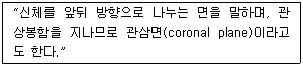
- 정중면(median plane)
- 전두면(frontal plane)
- 시상면(sagittal plane)
- 횡단면(transverse plane)
(정답률: 93%)
18. 다음 그림은 일회용 금속판 전극(disposable electrode)을 나타낸 것이다. 그림에서 금속판 부분은?
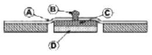
- Ⓐ 부분
- Ⓑ 부분
- Ⓒ 부분
- Ⓓ 부분
(정답률: 94%)
19. 다음 중 화학센서에서 측정하는 양은 무엇인가?
- 변위
- 온도
- 압력
- 수소이온농도
(정답률: 95%)
20. 다음 중 감각 순응(Sensory adaptation)에 대한 설명으로 옳은 것은?
- 통각과 압각은 쉽게 순응된다.
- 계속적인 자극은 어떤 기간 동안 수용기의 역치를 감소시킨다.
- 환경의 유용한 정보라고 할 수 있는 변화에 주의를 줄 수 있는 장점이 있다.
- 일정한 자극에 지속적으로 노출되면 자극에 대한 민감도가 강해지는 현상을 말한다.
(정답률: 75%)
2과목: 의용전자공학
21. 다음 LC 발진기로서 가장 널리 사용되는 것은?
- 암스트롱(Amstrong)
- 클랩(clap)
- 콜피츠(Colpitts)
- 하틀리(Hartley)
(정답률: 92%)
22. 두 종류의 금속을 접속시켜서 폐회로를 형성하고, 그 두 개의 접점부에 온도차가 발생하면 기전력을 발생시키는 현상을 무엇이라고 하나?
- 톰슨 효과
- 펠티어 효과
- 볼타 효과
- 제벡 효과
(정답률: 92%)
23. 마이크로프로세서에서 메모리나 입출력 장치들을 접속하는 신호선 집단을 무엇이라고 하는가?
- 캐시(cache)
- 버퍼(buffer)
- 버스(bus)
- 레지스터(register)
(정답률: 84%)
24. 다음 중 전류의 흐름에 관한 설명으로 옳지 않은 것은?
- 저항은 전류의 흐름을 방해하는 요소이다.
- 도체의 전기저항은 단면적과 도전율에 비례한다.
- 컨덕턴스는 전류가 흐르기 쉬운 정도를 나타낸다.
- 도체의 전기저항은 고유저항과 도체 길이에 비례한다.
(정답률: 75%)
25. 생체신호용 전극 중 주로 신생아의 심전도 측정에 사용 되는 것은?
- 흡착전극(suction electrode)
- 부유전극(Floating electrode)
- 가요성전극(Flexible electrode)
- 금속전극(Metal-plate electrode)
(정답률: 88%)
26. 어떤 도체의 단면에 2분 동안 120[C]의 전기량이 통과 하였을 때 전류는 얼마인가?
- 1[A]
- 2[A]
- 3[A]
- 4[A]
(정답률: 87%)
27. 기체농도의 측정 중 Mass spectroscopy에 대한 설명으로 옳지 않은 것은?
- 이온 전류를 측정하여 농도 계산
- 적외선이 기체에 의해 흡수되는 정도를 측정하여 농도 계산
- 기체 분자 별로 일정거리를 비행하므로 거리에 따라 기체 분자를 분리
- Sample gas를 추출하여 고전압으로 이온화 시킨 후 진공용기 내로 살포
(정답률: 64%)
28. 두신호의 차를 증폭하는 것으로 입력에 두 위상의 전압 V1, V2를 가했을 때, 출력전압의 크기가 V1, V2 차에 비례하는 회로는?
- 차등증폭회로
- 연산증폭회로
- 전력증폭회로
- 반전증폭회로
(정답률: 95%)
29. 다음 중 10진수 12를 2진수로 변환한 것으로 옳은 것은?
- (1100)2
- (1001)2
- (1110)2
- (1101)2
(정답률: 75%)
30. 다음 중 광학적 계측시스템에서 쓰이는 광원이 아닌 것은?
- 텅스텐램프
- 레이저
- 아크벌진
- 피에조크리스탈
(정답률: 90%)
31. 생체계측기기의 성능을 정량적으로 나타내기 위한 정적 특성에 대한 설명으로 옳은 것은?
- 정확도 - 측정치를 표시할 수 있는 유효숫자의 범위
- 해상도 - 참값과 측정값의 차이를 참값으로 나눈 것
- 정적감도 - 입력의 증감에 대한 출력의 증감의 비
- 재현성 - 측정될 수 있는 최소의 증감치
(정답률: 83%)
32. 다음 중 호흡기 폐포 내 공기와 모세혈관 내 혈액 간에 산소와 이산화탄소의 교환기능의 평가에 사용하는 지표는?
- 환기능(ventilation)
- 확산능(diffusion)
- 분포능(distribution)
- 흡수능(absorption)
(정답률: 70%)
33. 연산증폭기(operation amplifier)의 특징 중 옳은 것은?
- 매우 낮은 전압 이득
- 0(zero) 입력 임피던스
- 매우 높은 입력 임피던스
- 매우 높은 출력 임피던스
(정답률: 74%)
34. 면적 S[m2], 간격 d[m]인 평행판 콘덴서에 전압 V[V]의 직류전압을 인가했을 때 두 극판사이의 전계 E[V/m]을 표현한 식은?
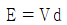
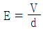
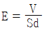
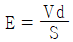
(정답률: 78%)
35. 다음 중 생체전기신호에 해당되지 않는 것은?
- 심응도
- 근전도
- 뇌전도
- 심전도
(정답률: 95%)
36. 다음 중 반도체의 일반적인 특성으로 옳지 않은 것은?
- 열전효과가 있다.
- 정류작용을 한다.
- 불순물을 첨가(doping)해도 저항이 변하지 않는다.
- 온도가 상승하면, 저항이 감소하여 도전율이 증가한다.
(정답률: 80%)
37. 다음 중 뇌파의 분류에 속하지 않는 것은?
- 알파파
- 세타파
- 심음파
- 감마파
(정답률: 84%)
38. 다음 중 다양한 생체신호 측정에 대한 설명으로 옳지 않은 것은?
- 심자도와 뇌자도는 생화학신호를 측정하는 것이다.
- 심전도와 뇌전도는 생체전기신호를 측정하는 것이다.
- 심음계와 청진기는 생체음향신호를 측정하는 것이다.
- 체지방측정기는 대부분 생체임피던스신호를 측정하는 것이다.
(정답률: 80%)
39. 프로그래밍언어 중 컴퓨터가 직접 이해할 수 있는 것은?
- machine language
- C language
- assembly language
- compiler language
(정답률: 84%)
40. 다음 중 반가산기 회로를 구성하는 게이트로 옳은 것은?
- 각각 1개의 AND 게이트와 OR 게이트
- 각각 1개의 OR 게이트와 NOR 게이트
- 각각 1개의 OR 게이트와 EX-OR 게이트
- 각각 1개의 AND 게이트와 EX-OR 게이트
(정답률: 72%)
3과목: 의료안전ㆍ법규 및 정보
41. 다음 중 의료용 재료 및 의료기기 용출액을 시험동물 수명의 전 기간 동안 1회 이상 노출 또는 접촉시켜 종양형성의 가능성을 평가하는 시험은?
- 발암성시험
- 만성독성시험
- 유전독성시험
- 생분해성시험
(정답률: 83%)
42. 의료정보의 종류의 하나인 임상정보에 해당하지 않는 것은?
- 생체신호
- 의무기록
- 의학영상
- 질병통제
(정답률: 85%)
43. 다음 중 병원에서 적합한 의료가스공급 장소가 아닌 것은?
- 집중치료실
- 분만실
- 수술실
- 환자휴게실
(정답률: 89%)
44. 다음 중 데이터베이스 관리 시스템의 필수 기능이 아닌 것은?
- 정의기능
- 조작기능
- 절차기능
- 제어기능
(정답률: 80%)
45. 의료기기 등급분류 기준 중 잠재적 위해성에 대한 판단 기준이 아닌 것은?
- 인체내 삽입 이식기간
- 의료기기의 인체 삽입 여부
- 구강내에서의 화학적 변화여부
- 의약품이나 에너지를 환자에게 전달하는지 여부
(정답률: 86%)
46. 다음 중 보건과 의료에 관련된 제품들을 인증하는 미국 위생 규격은?
- Q 마크
- CE 마크
- NSF 마크
- ISO 마크
(정답률: 70%)
47. 다음 중 PACS의 구성요소에 해당하지 않은 것은?
- 영상 획득부
- 영상 홍보부
- 영상저장 및 관리부
- 영상 조회부
(정답률: 78%)
48. 다음 환자관련정보 중 극비사항에 속하지 않는 것은?
- 예방접종
- 정신과 진료내용
- 성에 관계된 내용
- 환자와 의사간의 대화내용
(정답률: 89%)
49. HIS의 가장 핵심이 되는 부분으로서 병원을 찾아오는 환자를 중심으로 일어나는 일련의 흐름을 전산화 한 것은?
- LIS
- OCS
- EMR
- CDS
(정답률: 79%)
50. 컴퓨터에서 사용하는 정보의 양의 단위인 1킬로바이트[KB]는 다음 중 어느 것과 같은가?
- 1000 바이트
- 1024 바이트
- 1000000 바이트
- 1024000 바이트
(정답률: 92%)
51. 다음 중 인체에 과도한 전류가 흘렀을 때 인체에서 나타나는 작용이 아닌 것은?
- 열작용
- 화학작용
- 광학작용
- 자기작용
(정답률: 82%)
52. 데이터베이스의 설계 단계를 올바른 순서로 나타낸 것은?
- 요구조건 분석→개념적 설계→논리적설계→물리적설계→구현
- 요구조건 분석→개념적 설계→물리적설계→논리적설계→구현
- 요구조건 분석→논리적설계 →개념적설계→물리적설계→구현
- 요구조건 분석→논리적설계→물리적설계→개념적설계→구현
(정답률: 88%)
53. 의료기기는 의료기기위원회의 심의를 거쳐 몇 개의 등급으로 분류되는가?
- 2개
- 3개
- 4개
- 5개
(정답률: 82%)
54. 다음 인체에 접촉하는 기간에 따른 분류 중 “24시간 이상 30일 이내에 1회 혹은 반복 노출하는 의료기기”에 해당하는 것은?
- 제한접촉
- 반복접촉
- 지속접촉
- 영구접촉
(정답률: 83%)
55. 의료기기의 전기,기계적안전에 관한 공동기준규격에서는 의료기기와 관련된 누설전류를 분류하여 그 시험방법과 제한치를 규정하고 있는데, 그 누설전류의 종류가 아닌 것은?
- 접지누설전류
- 외장누설전류
- 표유누설전류
- 환자누설전류
(정답률: 82%)
56. 미생물에 물리적, 화학적 자극을 가하여 완전히 사멸 제거하는 것을 무엇이라고 하는가?
- 세척
- 멸균
- 방부
- 항균
(정답률: 91%)
57. 등전위 접지에 관한 설명 중 옳지 않은 것은?
- 수술실, 중환자실은 등전위 접지로 할 필요가 있다.
- 환자반경 2.5[m]이내의 범위에 10[mV]이상의 전위차가 발생되지 않도록 해야 한다.
- 마이크로 쇼크를 방지하기 위하여 인체에 100[mA]이상의 전류가 흐르지 않게 하기 위한 접지방식이다.
- 접지점을 2~3점으로 하면 각점의 미소한 전위차로 인하여, 접지선을 매개로 하여 전류가 인체에 흘러 들어가는 위험성이 있기 때문에 등전위로 할 필요가 있다.
(정답률: 73%)
58. 다음 국내 병원정보시스템과 관련된 용어 중 잘못 연결된 것은?
- OCS - 처방전달시스템
- HIS - 병원정보시스템
- EMR - 응급의료정보시스템
- PACS - 의료영상저장 및 전송시스템
(정답률: 88%)
59. 다음 중 수술용품 등에 대한 살균을 위한 의료가스로 적당한 것은?
- 산소
- 탄산
- 아산화질소
- 에틸렌옥사이드(EO)
(정답률: 84%)
60. 다음 중 의료기기 생물학적 안전을 위한 초기 평가시험에 해당되는 것은?
- 발암성시험
- 생분해성시험
- 이식시험
- 만성독성시험
(정답률: 74%)
4과목: 의료기기
61. 초음파 트랜스듀서 내에서의 음속이 2000[m/s]인 경우, 두께가 1[mm]인 트랜스듀서의 공명주파수는?
- 10[MHz]
- 5[MHz]
- 2[MHz]
- 1[MHz]
(정답률: 37%)
62. 전기치료 자극기에서 신호발생기를 위한 장치로 거리가 가장 먼 것은?
- 충전기
- 정류기
- 여과기
- 변압기
(정답률: 74%)
63. 인체 내부의 단면을 영상으로 보여 주는 방식으로 직선의 초음파 빔을 이용해 2차원 영상을 얻기 위해서 초음파 빔을 2차원적으로 주사해야 하는 방식은?
- A-Mode
- B-Mode
- C-Mode
- M-Mode
(정답률: 83%)
64. 다음 중 핵자기공명(NMR) 현상이 없는 원소는?
- 수소(H)
- 탄소(C)
- 인(P)
- 산소(O)
(정답률: 61%)
65. 인공관절 사용에 따라 발생할 수 있는 문제점이 아닌 것은?
- 수술 후 탈구
- 심부 상처부위 감염
- 골밀도 증가
- 인공관절염의 마모
(정답률: 86%)
66. 체외충격파쇄석기의 에너지 발생원 중 세라믹소자에 고주파를 인가하여 발생하는 초음파를 이용하는 방식은?
- 수중방선(spark gap) 방식
- 압전소자(piezoelectric) 방식
- 전자진동(electromagnettic) 방식
- 미소발파(micro explosion) 방식
(정답률: 79%)
67. 다음 중 카테터에 사용되는 재료들의 특성으로 가장 중요한 것은?
- 투명성
- 절단성 용이
- 높은 경도
- 유연성
(정답률: 78%)
68. 다음 중 체외충격파쇄석기의 구성요소가 아닌 것은?
- 충격파 발생장치
- 충격파 전달매체
- 위치 측정장치
- 전자기파 발생장치
(정답률: 60%)
69. X-선관에서 촬영 대상체까지의 거리가 50[cm]일 때, X-선 영상의 확대율을 4배로 하려면 X-선관에서 X-선 감지면(detector)까지의 거리는 얼마인가?
- 50cm
- 100cm
- 150cm
- 200cm
(정답률: 90%)
70. 다음 중 환자감시장치의 측정항목이 아닌 것이 포함된 것은?
- 심전도, 혈중산소포화도
- 혈중산소포화도, 호흡수
- 호흡수, 체온
- 체온, 근전도
(정답률: 86%)
71. 다음 중 수맥펌프의 주된 용도는 무엇인가?
- 수압을 낮추기 위해서
- 환자의 혈액 순환을 돕기 위해서
- 수맥을 정확하게 제어하기 위해서
- 환자의 체온을 일정하게 유지하기 위해서
(정답률: 84%)
72. 다음 중 청력검사기의 자극음으로 적당하지 않은 것은?
- 연속음
- 단락음
- 주파수 변조음
- 진폭 변조음
(정답률: 70%)
73. 박동형 인공심장에 대한 설명으로 옳지 않은 것은?
- 인공판막이 필요없다.
- 전기기계식 및 공압식으로 만들 수 있다.
- 자연심장과 유사한 박동성 혈류의 구현이 가능하다.
- 완전인공심장이나 좌심실 보조장치 모두 박동형 인공심장으로 구현 가능하다.
(정답률: 76%)
74. 신부전환자에게 혈맥투석을 처방 함으로써 기대할 수 있는 효과 아닌 것은?
- 과잉의 수분제거
- 노폐물 제거
- 신장세포 재생
- 전해질 균형유지
(정답률: 77%)
75. 환자감시장치에서 적외선과 가시광선을 이용하여 동맥혈의 헤모글로빈이 산소와의 결합 백분율로 표현되는 것은?
- HR
- BP
- APG
- SpO2
(정답률: 81%)
76. 다음 중 체내에 일정한 교류 전류를 흘린 후 임피던스를 측정하여 체내의 수분, 단백질, 지방성분 등을 분석하는 것은?
- 근전도계(EMG)
- 체성분 분석기
- 투석기
- 체액분석기
(정답률: 90%)
77. 초음파 측정 모드 중 혈류의 속도를 측정하는 모드는?
- A-mode
- Doppier-mode
- TM-mode
- B-mode
(정답률: 82%)
78. 대동맥 내에 삽입되어 풍선의 수축과 확장에 의해 심장의 후부하를 감소시키는 기기는?
- VAD
- 원심형 혈액펌프
- 축류형 심실보조기
- IABP
(정답률: 79%)
79. 다음 중 인큐베이터의 기본적인 기능으로 옳지 않은 것은?
- 환기조절
- 온도조절
- 냉풍조절
- 습도조절
(정답률: 82%)
80. 다음 중 물의 CT-번호(HU)는?
- -50
- 0
- 50
- 100
(정답률: 87%)
5과목: 의용기계공학
81. 다음 중 의용금속재료의 공통적 특징에 대한 설명으로 옳지 않은 것은?
- 상온에서 고체상태이다.
- 강도가 크고 가공변형이 쉽다.
- 열 및 전기의 좋은 전도체이다.
- 비중이 작고 금속적 광택이 있다.
(정답률: 66%)
82. 다음 중 수산화인회석의 의학적 응용이 아닌 것은?
- 인공치근
- 윤활제
- 인공관절
- 골형성 촉진제
(정답률: 84%)
83. 살아있는 생체에 직접 또는 간접적으로 접촉하여 생체의 조직이나 장기 또는 생체 기능의 일부 혹은 전체를 대신하거나 보완해 주는데 사용되는 모든 재료로 정의되는 것은?
- 생체재료
- 인공재료
- 자연재료
- 산업재료
(정답률: 86%)
84. 다음 중 하지의지를 일는 구성요소가 아닌 것은?
- 소켓
- 족부
- 외장
- 의수
(정답률: 68%)
85. 정탄성의 경우 경험적 모델에 사용되는 요소로만 나타낸 것은?
- 스프링, 질량
- 저항, 대쉬폿(dashpot)
- 질량, 대쉬폿(dashpot)
- 스프링, 대쉬폿(dashpot)
(정답률: 82%)
86. 다음 중 생제적합성을 평가하는 방법이 아닌 것은?
- 민감성 시험
- 혈액적합성 시험
- 세포독성 시험
- 화학적 조성측정 시험
(정답률: 65%)
87. 다음 중 초음파에 대한 설명으로 옳지 않은 것은?
- 공기를 함유한 조직을 잘 통과한다.
- 약 20[kHz] 이상의 음파를 초음파라 한다.
- 음향 임피던스는 밀도와 음속의 곱으로 나타낸다.
- 생체 조직에서의 감쇠계수는 주파수에 거의 비례한다.
(정답률: 78%)
88. 다음 중 자장의 강도가 큰 순서로 나열될 것은?
- 지구의 자장 ＞ 심장으로부터의 자장 ＞ 뇌로부터의 자장
- 심장으로부터의 자장 ＞ 지구의 자장 ＞ 뇌로부터의 자장
- 뇌로부터의 자장 ＞ 심장으로부터의 자장 ＞ 지구의 자장
- 뇌로부터의 자장 ＞ 지구의 자장 ＞ 심장으로부터의 자장
(정답률: 70%)
89. 다음 중 형상기억 합금의 주성분은?
- Ti-Ni
- Ti-Al
- Co-Cr
- Co-Cr-Mo
(정답률: 71%)
90. 생체 조직의 수동적 특징이 나타내는 특이성이 아닌 것은?
- 이방성
- 전기적 절연성
- 주파수 의존성
- 특이한 반사 산란 흡수 특성
(정답률: 54%)
91. 정지해 있거나 일정한 속도에 움직이는 즉 가속도가 0인 상태를 연구하는 응용역학의 분야는?
- 변형체역학
- 동역학
- 정역학
- 유체역학
(정답률: 74%)
92. 다음 중 주파수 100[Hz]에서 도전율이 가장 높은 조직은?
- 골격근
- 혈액
- 지방
- 간장
(정답률: 64%)
93. 다음 중 생체의 심부 기온에 이용되지 않는 에너지는?
- 적외선
- 초음파
- X 선
- 전자파
(정답률: 66%)
94. 다음 중 의료용 고분자 재료의 장점이 아닌 것은?
- 물성퇴화
- 낮은 비중
- 가공용이성
- 원상회복력
(정답률: 59%)
95. 다음 그림에서 최대 굽힘 모멘트의 크기는?
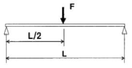
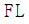
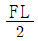
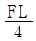
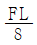
(정답률: 71%)
96. 다음 중 초음파의 전파속도가 높은 순서로 배열된 것은?
- 근육＞간장＞두개골
- 간장＞두개골＞공기
- 두개골＞근육＞공기
- 간장＞공기＞근육
(정답률: 76%)
97. 체중의 의지, 척추의 운동제한, 척추의 정렬 유지 및 교정 등에 사용되는 보조기는?
- 주관절보조기
- 견갈대보조기
- 체간보조기
- 단하지보조기
(정답률: 62%)
98. 인체의 중심선에서부터 인체분절이 가까워지는 동작을 무엇이라고 하는가?
- 외전(abduction)
- 내전(adduciton)
- 굴곡(flexion)
- 신전(extension)
(정답률: 83%)
99. 유체가 흐르려 할 때 분자간의 인력에 의해 유체 상호간의 유동을 방해하려는 저항력이 생기게 되는데 이러한 성질을 무엇이라고 하는가?
- 점성
- 저항성
- 압축성
- 강성
(정답률: 68%)
100. 상온에서 쉽게 종합반응이 일어나서 뼈 접착제의 주 원료가 되는 합성고분자 재료는?
- 폴리우레탄(PU)
- 폴리프로필렌(PP)
- 폴리아마이드(Polyamide)
- 폴리메틸메타아크릴레이트(PMMA)
(정답률: 64%)